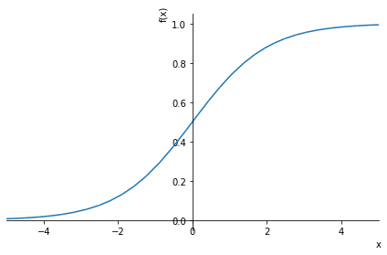

import pandas as pd
import numpy as np
import torch
from torch import tensor
from fastai.data.transforms import RandomSplitter
import sympy
import torch.nn.functional as F
# Set some useful display settings
np.set_printoptions(linewidth=140)
torch.set_printoptions(linewidth=140, sci_mode=False, edgeitems=7)
pd.set_option('display.width', 140)1 Introduction
In this series of articles I will be re-visiting the FastAI Practical Deep Learning for Coders course for this year 2022 which I have completed in previous years. This article covers lesson 5 of this years course, where we will look at the fundemental details and differences between machine learning (ml) and deep learning (dl).
If you don’t understand the difference between ml and dl or were too afraid to ask - this is the article for you!
2 Machine Learning vs Deep Learning
Machine Learning is a branch of computer science that seeks to create systems (often called ‘models’) that learn how to perform a task, without being given explicit instructions of how to perform that task. These models learn for themselves how to perform a task. Machine Learning includes a wide range of different types of models, for example linear regression, random forrests, and more.
Deep learning is a sub-branch of machine learning, which uses multi-layered artifical neural networks as models that learn how to perform a task, without being given explicit instructions of how to perform that task.
Other notable differences between machine learning and deep learning include:
- Machine learning models tend to be easier to understand and explain why they do what they do, deep learning models tend to be more difficult to understand the reasons for their behaviour
- Machine learning models tend to require the data they use to be more carefully constructed, deep learning models tend to be able to work with data that does not need to be so carefully created
- Deep learning models are much more powerful and succesful than machine learning models at solving problems that use images or text
This article also further explains these differences.
In this project we will construct from scratch a very simple machine learning model called linear regression. We will then gradually develop a deep learning model from scratch, and we will illustrate the technical differences between these types of models, which also demonstrates the reasons for the differences between the two types of models highlighted above.
We will not use any machine learning libraries, which often obscure the details of how these models are implemented. In this project, we will expose the fundemental details of these models by coding them manually and illustrating the mathematics behind them.
3 The Dataset: The Kaggle Titanic passenger suvival dataset
For our project we will use the famous Titanic - Machine Learning from Disaster dataset. This is a dataset of the passengers from the Titanic disaster, and the task is to predict which of these passengers died and which survived.
This is a very simple and well known dataset, and is chosen not because it’s an especially challenging task, but more to allow us to understand the differences between machine learning and deep learning.
4 Import Libraries
First we will import the required libraries.
5 Get & Clean Data
Let’s now extract the data and examine what it looks like.
!unzip titanic.zip
!lsArchive: titanic.zip
inflating: gender_submission.csv
inflating: test.csv
inflating: train.csv
drive gender_submission.csv sample_data test.csv titanic.zip train.csvdf = pd.read_csv('train.csv')
df.head()| PassengerId | Survived | Pclass | Name | Sex | Age | SibSp | Parch | Ticket | Fare | Cabin | Embarked | |
|---|---|---|---|---|---|---|---|---|---|---|---|---|
| 0 | 1 | 0 | 3 | Braund, Mr. Owen Harris | male | 22.0 | 1 | 0 | A/5 21171 | 7.2500 | NaN | S |
| 1 | 2 | 1 | 1 | Cumings, Mrs. John Bradley (Florence Briggs Thayer) | female | 38.0 | 1 | 0 | PC 17599 | 71.2833 | C85 | C |
| 2 | 3 | 1 | 3 | Heikkinen, Miss. Laina | female | 26.0 | 0 | 0 | STON/O2. 3101282 | 7.9250 | NaN | S |
| 3 | 4 | 1 | 1 | Futrelle, Mrs. Jacques Heath (Lily May Peel) | female | 35.0 | 1 | 0 | 113803 | 53.1000 | C123 | S |
| 4 | 5 | 0 | 3 | Allen, Mr. William Henry | male | 35.0 | 0 | 0 | 373450 | 8.0500 | NaN | S |
Here we can see the different columns in our passenger dataset, for example Name, Sex, Age etc. The Survived column tells us if that passenger survived the disaster, with a value of 1 if they did and a value of 0 if they died. This is the value we want our model to predict, given the other data in the dataset. In other words, we want to create a model to predict Survived based on Name, Age, Ticket, Fare etc.
Machine learning models require the data to be all numbers, they can’t work with missing values. Let’s check to see if we have any missing values in our dataet the textual columns of the data. The isna() function will do this for us in python.
df.isna().sum()PassengerId 0
Survived 0
Pclass 0
Name 0
Sex 0
Age 177
SibSp 0
Parch 0
Ticket 0
Fare 0
Cabin 687
Embarked 2
dtype: int64We can see that the Age, Cabin and Embarked columns have missing values, so we will need to do something about these. Let’s replace the missing values with the most common value in that column, this is known in statistics as the mode.
Lets calculate the mode for each column.
modes = df.mode().iloc[0]
modesPassengerId 1
Survived 0.0
Pclass 3.0
Name Abbing, Mr. Anthony
Sex male
Age 24.0
SibSp 0.0
Parch 0.0
Ticket 1601
Fare 8.05
Cabin B96 B98
Embarked S
Name: 0, dtype: objectNow that we have the mode of each column, we can use these to fill in the missing values of any column using the fillna() function.
df.fillna(modes, inplace=True)Let’s check to see we no longer have any missing values.
df.isna().sum()PassengerId 0
Survived 0
Pclass 0
Name 0
Sex 0
Age 0
SibSp 0
Parch 0
Ticket 0
Fare 0
Cabin 0
Embarked 0
dtype: int64As mentioned earlier, machine learning models require numbers as inputs - so we will need to convert our text fields into numeric fields. We can do this using a standard technique called one-hot encoding which creates a numeric column for each text value which are called dummy variables which has a value of 1 or zero depending if that text/category value is present or not. We can create these fields using the get_dummies() method.
df = pd.get_dummies(df, columns=["Sex","Pclass","Embarked"])
df.columnsIndex(['PassengerId', 'Survived', 'Name', 'Age', 'SibSp', 'Parch', 'Ticket', 'Fare', 'Cabin', 'LogFare', 'Sex_female', 'Sex_male',
'Pclass_1', 'Pclass_2', 'Pclass_3', 'Embarked_C', 'Embarked_Q', 'Embarked_S'],
dtype='object')Let’s see what these dummy variable columns look like.
added_cols = ['Sex_male', 'Sex_female', 'Pclass_1', 'Pclass_2', 'Pclass_3', 'Embarked_C', 'Embarked_Q', 'Embarked_S']
df[added_cols].head()| Sex_male | Sex_female | Pclass_1 | Pclass_2 | Pclass_3 | Embarked_C | Embarked_Q | Embarked_S | |
|---|---|---|---|---|---|---|---|---|
| 0 | 1 | 0 | 0 | 0 | 1 | 0 | 0 | 1 |
| 1 | 0 | 1 | 1 | 0 | 0 | 1 | 0 | 0 |
| 2 | 0 | 1 | 0 | 0 | 1 | 0 | 0 | 1 |
| 3 | 0 | 1 | 1 | 0 | 0 | 0 | 0 | 1 |
| 4 | 1 | 0 | 0 | 0 | 1 | 0 | 0 | 1 |
So we will need to convert our model variables into Pytorch tensors, which will enable us to use our data for both machine learning and deep learning later on.
t_dep = tensor(df.Survived)indep_cols = ['Age', 'SibSp', 'Parch', 'LogFare'] + added_cols
t_indep = tensor(df[indep_cols].values, dtype=torch.float)
t_indeptensor([[22.0000, 1.0000, 0.0000, 2.1102, 1.0000, 0.0000, 0.0000, 0.0000, 1.0000, 0.0000, 0.0000, 1.0000],
[38.0000, 1.0000, 0.0000, 4.2806, 0.0000, 1.0000, 1.0000, 0.0000, 0.0000, 1.0000, 0.0000, 0.0000],
[26.0000, 0.0000, 0.0000, 2.1889, 0.0000, 1.0000, 0.0000, 0.0000, 1.0000, 0.0000, 0.0000, 1.0000],
[35.0000, 1.0000, 0.0000, 3.9908, 0.0000, 1.0000, 1.0000, 0.0000, 0.0000, 0.0000, 0.0000, 1.0000],
[35.0000, 0.0000, 0.0000, 2.2028, 1.0000, 0.0000, 0.0000, 0.0000, 1.0000, 0.0000, 0.0000, 1.0000],
[24.0000, 0.0000, 0.0000, 2.2469, 1.0000, 0.0000, 0.0000, 0.0000, 1.0000, 0.0000, 1.0000, 0.0000],
[54.0000, 0.0000, 0.0000, 3.9677, 1.0000, 0.0000, 1.0000, 0.0000, 0.0000, 0.0000, 0.0000, 1.0000],
...,
[25.0000, 0.0000, 0.0000, 2.0857, 1.0000, 0.0000, 0.0000, 0.0000, 1.0000, 0.0000, 0.0000, 1.0000],
[39.0000, 0.0000, 5.0000, 3.4054, 0.0000, 1.0000, 0.0000, 0.0000, 1.0000, 0.0000, 1.0000, 0.0000],
[27.0000, 0.0000, 0.0000, 2.6391, 1.0000, 0.0000, 0.0000, 1.0000, 0.0000, 0.0000, 0.0000, 1.0000],
[19.0000, 0.0000, 0.0000, 3.4340, 0.0000, 1.0000, 1.0000, 0.0000, 0.0000, 0.0000, 0.0000, 1.0000],
[24.0000, 1.0000, 2.0000, 3.1966, 0.0000, 1.0000, 0.0000, 0.0000, 1.0000, 0.0000, 0.0000, 1.0000],
[26.0000, 0.0000, 0.0000, 3.4340, 1.0000, 0.0000, 1.0000, 0.0000, 0.0000, 1.0000, 0.0000, 0.0000],
[32.0000, 0.0000, 0.0000, 2.1691, 1.0000, 0.0000, 0.0000, 0.0000, 1.0000, 0.0000, 1.0000, 0.0000]])t_indep.shapetorch.Size([891, 12])6 Creating a Linear Model
A simple linear regression model attempts to capture a linear relationship betweeen one independant variable and a dependant variable, so that you can predict the latter using the former. In our example below, the independant variable model coefficient is \(b_{1}\). A constant value is also added, in this case \(b_{0}\). This is basically the equation of a line.
A multiple linear regression model attempts to capture a linear relationship betweeen multiple independant variables and a dependant variable, so that you can predict the latter using the former. In our example below, the independant variable model coefficients are \(b_{0}\) to \(b_{n}\). This is basically the equation of a hyperplane which is a line in multiple dimensions, in this case that number is the number of independant variables.
The values of the independant variables themselves are represented by \(x_{1}\) to \(x_{n}\).
Linear models generate their predictions by multiplying the values of each variable by its coefficient, then summing the values. So for our multiple linear regression model that would mean summing \(b_{1}\) * \(x_{1}\) to \(b_{n}\) * \(x_{n}\) then adding the constant term \(b_{0}\) to get the value for the dependant variable y.
You can read more about linear regression here.

For our titanic dataset, we have multiple independant variables such as passenger id, name, fare etc - so we will need to use a multiple linear regression model, which will have a coefficient for each variable we have.
Let’s set up some coefficient’s for each variable with some random initial values.
torch.manual_seed(442)
n_coeff = t_indep.shape[1]
coeffs = torch.rand(n_coeff)-0.5
coeffstensor([-0.4629, 0.1386, 0.2409, -0.2262, -0.2632, -0.3147, 0.4876, 0.3136, 0.2799, -0.4392, 0.2103, 0.3625])Interestingly we don’t need to add a constant term as per the linear regression model equation. Why? because our dummy variables already cover the whole dataset, everyone is already within one existing value eg male or female. So we don’t need a separate constant term to cover any rows not included.
As mentioned, a linear model will calculate its predictions by multiplying the independant variables by their corresponding coefficients so lets see what that looks like. Remember we have multiple values of our independant variables, one row per passenger, so a matrix. So we will expect from linear algebra, when we multiply a vector (coefficients) by a matrix we should end up with a new matrix.
t_indep*coeffstensor([[-10.1838, 0.1386, 0.0000, -0.4772, -0.2632, -0.0000, 0.0000, 0.0000, 0.2799, -0.0000, 0.0000, 0.3625],
[-17.5902, 0.1386, 0.0000, -0.9681, -0.0000, -0.3147, 0.4876, 0.0000, 0.0000, -0.4392, 0.0000, 0.0000],
[-12.0354, 0.0000, 0.0000, -0.4950, -0.0000, -0.3147, 0.0000, 0.0000, 0.2799, -0.0000, 0.0000, 0.3625],
[-16.2015, 0.1386, 0.0000, -0.9025, -0.0000, -0.3147, 0.4876, 0.0000, 0.0000, -0.0000, 0.0000, 0.3625],
[-16.2015, 0.0000, 0.0000, -0.4982, -0.2632, -0.0000, 0.0000, 0.0000, 0.2799, -0.0000, 0.0000, 0.3625],
[-11.1096, 0.0000, 0.0000, -0.5081, -0.2632, -0.0000, 0.0000, 0.0000, 0.2799, -0.0000, 0.2103, 0.0000],
[-24.9966, 0.0000, 0.0000, -0.8973, -0.2632, -0.0000, 0.4876, 0.0000, 0.0000, -0.0000, 0.0000, 0.3625],
...,
[-11.5725, 0.0000, 0.0000, -0.4717, -0.2632, -0.0000, 0.0000, 0.0000, 0.2799, -0.0000, 0.0000, 0.3625],
[-18.0531, 0.0000, 1.2045, -0.7701, -0.0000, -0.3147, 0.0000, 0.0000, 0.2799, -0.0000, 0.2103, 0.0000],
[-12.4983, 0.0000, 0.0000, -0.5968, -0.2632, -0.0000, 0.0000, 0.3136, 0.0000, -0.0000, 0.0000, 0.3625],
[ -8.7951, 0.0000, 0.0000, -0.7766, -0.0000, -0.3147, 0.4876, 0.0000, 0.0000, -0.0000, 0.0000, 0.3625],
[-11.1096, 0.1386, 0.4818, -0.7229, -0.0000, -0.3147, 0.0000, 0.0000, 0.2799, -0.0000, 0.0000, 0.3625],
[-12.0354, 0.0000, 0.0000, -0.7766, -0.2632, -0.0000, 0.4876, 0.0000, 0.0000, -0.4392, 0.0000, 0.0000],
[-14.8128, 0.0000, 0.0000, -0.4905, -0.2632, -0.0000, 0.0000, 0.0000, 0.2799, -0.0000, 0.2103, 0.0000]])So there is a bit of an issue here, we notice the first column has much bigger values? this is for the column age, which has bigger numbers than all other numeric columns. This can create problems for machine learning, as many models will treat the column with bigger numbers as more important than other columns.
We can address this issue by normalising all the values i.e. dividing each column by its maximum value. This will result in all values being bewteen 1 and 0 and so all variables being treated with equal importance.
vals,indices = t_indep.max(dim=0)
t_indep = t_indep / valst_indep*coeffstensor([[-0.1273, 0.0173, 0.0000, -0.0765, -0.2632, -0.0000, 0.0000, 0.0000, 0.2799, -0.0000, 0.0000, 0.3625],
[-0.2199, 0.0173, 0.0000, -0.1551, -0.0000, -0.3147, 0.4876, 0.0000, 0.0000, -0.4392, 0.0000, 0.0000],
[-0.1504, 0.0000, 0.0000, -0.0793, -0.0000, -0.3147, 0.0000, 0.0000, 0.2799, -0.0000, 0.0000, 0.3625],
[-0.2025, 0.0173, 0.0000, -0.1446, -0.0000, -0.3147, 0.4876, 0.0000, 0.0000, -0.0000, 0.0000, 0.3625],
[-0.2025, 0.0000, 0.0000, -0.0798, -0.2632, -0.0000, 0.0000, 0.0000, 0.2799, -0.0000, 0.0000, 0.3625],
[-0.1389, 0.0000, 0.0000, -0.0814, -0.2632, -0.0000, 0.0000, 0.0000, 0.2799, -0.0000, 0.2103, 0.0000],
[-0.3125, 0.0000, 0.0000, -0.1438, -0.2632, -0.0000, 0.4876, 0.0000, 0.0000, -0.0000, 0.0000, 0.3625],
...,
[-0.1447, 0.0000, 0.0000, -0.0756, -0.2632, -0.0000, 0.0000, 0.0000, 0.2799, -0.0000, 0.0000, 0.3625],
[-0.2257, 0.0000, 0.2008, -0.1234, -0.0000, -0.3147, 0.0000, 0.0000, 0.2799, -0.0000, 0.2103, 0.0000],
[-0.1562, 0.0000, 0.0000, -0.0956, -0.2632, -0.0000, 0.0000, 0.3136, 0.0000, -0.0000, 0.0000, 0.3625],
[-0.1099, 0.0000, 0.0000, -0.1244, -0.0000, -0.3147, 0.4876, 0.0000, 0.0000, -0.0000, 0.0000, 0.3625],
[-0.1389, 0.0173, 0.0803, -0.1158, -0.0000, -0.3147, 0.0000, 0.0000, 0.2799, -0.0000, 0.0000, 0.3625],
[-0.1504, 0.0000, 0.0000, -0.1244, -0.2632, -0.0000, 0.4876, 0.0000, 0.0000, -0.4392, 0.0000, 0.0000],
[-0.1852, 0.0000, 0.0000, -0.0786, -0.2632, -0.0000, 0.0000, 0.0000, 0.2799, -0.0000, 0.2103, 0.0000]])We can now create predictions from our linear model, by adding up the rows of the product:
preds = (t_indep*coeffs).sum(axis=1)Let’s take a look at the first few:
preds[:10]tensor([ 0.1927, -0.6239, 0.0979, 0.2056, 0.0968, 0.0066, 0.1306, 0.3476, 0.1613, -0.6285])6.1 How our Linear Model Learns - Adding Gradient Descent
So currently we have a basic linear model, but it is’nt predicting very well because the model coefficients are still random values. How can make these coefficients better so our model predictions can get better? we can use a algorithm called Gradient Descent (or GD).
This article explains the fundamentals of GD. And this article as well as this one explain more the mathematics of GD.
In essence, Gradient Descent is an algorithm that can be used to find values for the coefficients of a function that reduce a separate loss function. So as long as we can define an appropriate loss function, we can use this algorithm.
What would be an appropriate loss function that we would want to minimise the value of? Well we would like our predictions ultimately to be as close to the actual values we want to predict. So here the loss would be a measure of how wrong our predictions are. A high loss value would mean many mistakes, and a low loss value would mean fewer mistakes. This would then be a good function for us to minimise using Gradient Descent.
So in our case, a good loss function might be:
Loss = predictions - values we want to predict
So we will have a different loss value for each value and its prediction, so if we took the mean value of all of these different loss values, that would be a way to capture the overall loss for all predictions. It would also be helpful for these differences to be always positive values.
Lets calculate what this loss would be on our current predictions.
loss = torch.abs(preds-t_dep).mean()
losstensor(0.5382)Since for Gradient Descent we will need to repeatedly use this loss function, lets define some functions to calculate our predictions as well as the loss.
def calc_preds(coeffs, indeps):
return (indeps*coeffs).sum(axis=1)
def calc_loss(coeffs, indeps, deps):
return torch.abs(calc_preds(coeffs, indeps)-deps).mean()Gradient Descent requires us to calculate gradients. These are the values of the derivatives of the functions that generate the predictions so in our case the derviatives of the multiple linear regression function seen earlier. The Pytorch module can calculate these gradients for us every time the linear regression function is used if we set requires_grad() on the model coefficients. Lets do that now.
coeffs.requires_grad_()tensor([-0.4629, 0.1386, 0.2409, -0.2262, -0.2632, -0.3147, 0.4876, 0.3136, 0.2799, -0.4392, 0.2103, 0.3625], requires_grad=True)Let’s now calculate the loss for our current predictions again using our new function.
loss = calc_loss(coeffs, t_indep, t_dep)
losstensor(0.5382, grad_fn=<MeanBackward0>)We can now ask Pytorch to calculate our gradients now using backward().
loss.backward()Let’s have a look at the gradients calculated for our model coefficients.
coeffs.gradtensor([-0.0106, 0.0129, -0.0041, -0.0484, 0.2099, -0.2132, -0.1212, -0.0247, 0.1425, -0.1886, -0.0191, 0.2043])These gradients tell us how much we need to change each model coefficient to reduce the loss function i.e. to improve the predictions.
So putting these steps together:
loss = calc_loss(coeffs, t_indep, t_dep)
loss.backward()
coeffs.gradtensor([-0.0212, 0.0258, -0.0082, -0.0969, 0.4198, -0.4265, -0.2424, -0.0494, 0.2851, -0.3771, -0.0382, 0.4085])We can see our gradient values have doubled? this ie because every time backward() is called it adds the new gradients to the previous ones. We don’t want this, as we only want the gradients that pertain to the current model coefficients, not the previous ones.
So what we really want to do is reset the gradient values to zero after each step of the gradient descent process.
Lets define some code to put this all together, and print our current loss value.
# Calculate loss
loss = calc_loss(coeffs, t_indep, t_dep)
# Calculate gradients of linear model e.g. coeffs * inputs
loss.backward()
# Don't calculate any gradients here
with torch.no_grad():
# Subtract the gradients from the model coeffcients to improve them, but scale this update by 0.1 called the 'learning rate'
coeffs.sub_(coeffs.grad * 0.1)
# Set gradients to zero
coeffs.grad.zero_()
# Print current loss
print(calc_loss(coeffs, t_indep, t_dep))tensor(0.4945)The learning rate i used to ensure we take small steps of improvement for the cofficients, rather than big steps. To better understand why and how gradient decent works in more detail this article explains the fundamentals of GD. And this article as well as this one explain more the mathematics of GD.
6.2 Training the Linear Model
Before we can train our model we need to split our data into training and validation sets. We can use RandomSplitter() to do this.
trn_split,val_split=RandomSplitter(seed=42)(df)trn_indep,val_indep = t_indep[trn_split],t_indep[val_split]
trn_dep,val_dep = t_dep[trn_split],t_dep[val_split]
len(trn_indep),len(val_indep)(713, 178)We’ll also create functions for the three things we did manually above: updating coeffs, doing one full gradient descent step, and initilising coeffs to random numbers.
def update_coeffs(coeffs, lr):
coeffs.sub_(coeffs.grad * lr)
coeffs.grad.zero_()
def one_epoch(coeffs, lr):
loss = calc_loss(coeffs, trn_indep, trn_dep)
loss.backward()
with torch.no_grad(): update_coeffs(coeffs, lr)
print(f"{loss:.3f}", end="; ")
def init_coeffs():
return (torch.rand(n_coeff)-0.5).requires_grad_()Let’s now create a function do train the model. We will initialise the model coefficients to random values, then loop through one epoch to calculate the loss and gradients, and update the coefficients. An epoch is the model generating precdictions for the entire training dataet. So the training process is multiple epochs/loops over the training data, updating the model coefficients in each loop. This is the gradient descent algorithm.
def train_model(epochs=30, lr=0.01):
torch.manual_seed(442)
coeffs = init_coeffs()
for i in range(epochs): one_epoch(coeffs, lr=lr)
return coeffsLets choose a learning rate of 0.2 and train our model for 18 epochs. What we hope to see is out loss value go down in each epoch, as the model coefficients are updated to get better and improve the predictions.
coeffs = train_model(18, lr=0.2)0.536; 0.502; 0.477; 0.454; 0.431; 0.409; 0.388; 0.367; 0.349; 0.336; 0.330; 0.326; 0.329; 0.304; 0.314; 0.296; 0.300; 0.289; We can see here as expected, the loss is going down and the predictions are improving with each epoch.
This means that the model coefficients for each of the input variables is getting better, or more accurate. Lets have a look at the improved coefficients so far.
def show_coeffs():
return dict(zip(indep_cols, coeffs.requires_grad_(False)))
show_coeffs(){'Age': tensor(-0.2694),
'SibSp': tensor(0.0901),
'Parch': tensor(0.2359),
'LogFare': tensor(0.0280),
'Sex_male': tensor(-0.3990),
'Sex_female': tensor(0.2345),
'Pclass_1': tensor(0.7232),
'Pclass_2': tensor(0.4112),
'Pclass_3': tensor(0.3601),
'Embarked_C': tensor(0.0955),
'Embarked_Q': tensor(0.2395),
'Embarked_S': tensor(0.2122)}6.3 Checking Model Accuracy
So the loss value is giving us a good indication of how well our model is improving. But it’s not perhaps what we want as our ultimate measure of the model performance. For the kaggle competition, the desire measure of performance is accuracy i.e.
Accuracy = Correct Predictions / Total Predictions
Lets first get the predictions.
preds = calc_preds(coeffs, val_indep)We want a simple category of True if the passenger died, and False if they survived. To convert our predictions into these values we will use a threshold of 0.5 to decide which converts to which.
results = val_dep.bool()==(preds>0.5)
results[:16]tensor([ True, True, True, True, True, True, True, True, True, True, False, False, False, True, True, False])Let’s now calculate the accuracy.
def acc(coeffs):
return (val_dep.bool()==(calc_preds(coeffs, val_indep)>0.5)).float().mean()
acc(coeffs)tensor(0.7865)6.4 Improving Model Predictions with a Sigmoid Function
If we look at our predictions, they could easily have values bigger that 1 or less than zero.
preds[:28]tensor([ 0.8160, 0.1295, -0.0148, 0.1831, 0.1520, 0.1350, 0.7279, 0.7754, 0.3222, 0.6740, 0.0753, 0.0389, 0.2216, 0.7631,
0.0678, 0.3997, 0.3324, 0.8278, 0.1078, 0.7126, 0.1023, 0.3627, 0.9937, 0.8050, 0.1153, 0.1455, 0.8652, 0.3425])We want these predictions to be only from 0-1. If we pass these predictions through a sigmoid function that will achieve this.
sympy.plot("1/(1+exp(-x))", xlim=(-5,5));
Let’s now improve our predictions function using this.
def calc_preds(coeffs, indeps):
return torch.sigmoid((indeps*coeffs).sum(axis=1))And now lets train the model again.
coeffs = train_model(lr=100)0.510; 0.327; 0.294; 0.207; 0.201; 0.199; 0.198; 0.197; 0.196; 0.196; 0.196; 0.195; 0.195; 0.195; 0.195; 0.195; 0.195; 0.195; 0.194; 0.194; 0.194; 0.194; 0.194; 0.194; 0.194; 0.194; 0.194; 0.194; 0.194; 0.194; This has really improved the loss which is falling much more. Let’s check the accuracy.
acc(coeffs)tensor(0.8258)This has also improved a lot.
Lets look at the model coefficients.
show_coeffs(){'Age': tensor(-1.5061),
'SibSp': tensor(-1.1575),
'Parch': tensor(-0.4267),
'LogFare': tensor(0.2543),
'Sex_male': tensor(-10.3320),
'Sex_female': tensor(8.4185),
'Pclass_1': tensor(3.8389),
'Pclass_2': tensor(2.1398),
'Pclass_3': tensor(-6.2331),
'Embarked_C': tensor(1.4771),
'Embarked_Q': tensor(2.1168),
'Embarked_S': tensor(-4.7958)}Do these values make sense? these coefficients suggest what are the most important features useful for predicting survival. We can see that Sex_male has a big negative value, which implies a negative association. We can also see age is negatively associated. Taken together, these two coefficients suggest that males and older people were less likely to survive the titantic disaster.
6.5 Improving the Maths - Using Matrix Multiplications
Is there a way we can improve the calculations to make things more efficient? if we look again at the biggest calculation to make predictions.
(val_indep*coeffs).sum(axis=1)tensor([ 12.3288, -14.8119, -15.4540, -13.1513, -13.3512, -13.6469, 3.6248, 5.3429, -22.0878, 3.1233, -21.8742, -15.6421, -21.5504,
3.9393, -21.9190, -12.0010, -12.3775, 5.3550, -13.5880, -3.1015, -21.7237, -12.2081, 12.9767, 4.7427, -21.6525, -14.9135,
-2.7433, -12.3210, -21.5886, 3.9387, 5.3890, -3.6196, -21.6296, -21.8454, 12.2159, -3.2275, -12.0289, 13.4560, -21.7230,
-3.1366, -13.2462, -21.7230, -13.6831, 13.3092, -21.6477, -3.5868, -21.6854, -21.8316, -14.8158, -2.9386, -5.3103, -22.2384,
-22.1097, -21.7466, -13.3780, -13.4909, -14.8119, -22.0690, -21.6666, -21.7818, -5.4439, -21.7407, -12.6551, -21.6671, 4.9238,
-11.5777, -13.3323, -21.9638, -15.3030, 5.0243, -21.7614, 3.1820, -13.4721, -21.7170, -11.6066, -21.5737, -21.7230, -11.9652,
-13.2382, -13.7599, -13.2170, 13.1347, -21.7049, -21.7268, 4.9207, -7.3198, -5.3081, 7.1065, 11.4948, -13.3135, -21.8723,
-21.7230, 13.3603, -15.5670, 3.4105, -7.2857, -13.7197, 3.6909, 3.9763, -14.7227, -21.8268, 3.9387, -21.8743, -21.8367,
-11.8518, -13.6712, -21.8299, 4.9440, -5.4471, -21.9666, 5.1333, -3.2187, -11.6008, 13.7920, -21.7230, 12.6369, -3.7268,
-14.8119, -22.0637, 12.9468, -22.1610, -6.1827, -14.8119, -3.2838, -15.4540, -11.6950, -2.9926, -3.0110, -21.5664, -13.8268,
7.3426, -21.8418, 5.0744, 5.2582, 13.3415, -21.6289, -13.9898, -21.8112, -7.3316, 5.2296, -13.4453, 12.7891, -22.1235,
-14.9625, -3.4339, 6.3089, -21.9839, 3.1968, 7.2400, 2.8558, -3.1187, 3.7965, 5.4667, -15.1101, -15.0597, -22.9391,
-21.7230, -3.0346, -13.5206, -21.7011, 13.4425, -7.2690, -21.8335, -12.0582, 13.0489, 6.7993, 5.2160, 5.0794, -12.6957,
-12.1838, -3.0873, -21.6070, 7.0744, -21.7170, -22.1001, 6.8159, -11.6002, -21.6310])So we are multiplying elements together then summing accross rows. This is identical to the linear algebra operation of a matrix-vector product. This operation has been implemented in Pytorch and uses the ‘@’ symbol, so we can write the above in a simpler way as:
val_indep@coeffstensor([ 12.3288, -14.8119, -15.4540, -13.1513, -13.3511, -13.6468, 3.6248, 5.3429, -22.0878, 3.1233, -21.8742, -15.6421, -21.5504,
3.9393, -21.9190, -12.0010, -12.3775, 5.3550, -13.5880, -3.1015, -21.7237, -12.2081, 12.9767, 4.7427, -21.6525, -14.9135,
-2.7433, -12.3210, -21.5886, 3.9387, 5.3890, -3.6196, -21.6296, -21.8454, 12.2159, -3.2275, -12.0289, 13.4560, -21.7230,
-3.1366, -13.2462, -21.7230, -13.6831, 13.3092, -21.6477, -3.5868, -21.6854, -21.8316, -14.8158, -2.9386, -5.3103, -22.2384,
-22.1097, -21.7466, -13.3780, -13.4909, -14.8119, -22.0690, -21.6666, -21.7818, -5.4439, -21.7407, -12.6551, -21.6671, 4.9238,
-11.5777, -13.3323, -21.9638, -15.3030, 5.0243, -21.7614, 3.1820, -13.4721, -21.7170, -11.6066, -21.5737, -21.7230, -11.9652,
-13.2382, -13.7599, -13.2170, 13.1347, -21.7049, -21.7268, 4.9207, -7.3198, -5.3081, 7.1065, 11.4948, -13.3135, -21.8723,
-21.7230, 13.3603, -15.5670, 3.4105, -7.2857, -13.7197, 3.6909, 3.9763, -14.7227, -21.8268, 3.9387, -21.8743, -21.8367,
-11.8518, -13.6712, -21.8299, 4.9440, -5.4471, -21.9666, 5.1333, -3.2187, -11.6008, 13.7920, -21.7230, 12.6369, -3.7268,
-14.8119, -22.0637, 12.9468, -22.1610, -6.1827, -14.8119, -3.2838, -15.4540, -11.6950, -2.9926, -3.0110, -21.5664, -13.8268,
7.3426, -21.8418, 5.0744, 5.2582, 13.3415, -21.6289, -13.9898, -21.8112, -7.3316, 5.2296, -13.4453, 12.7891, -22.1235,
-14.9625, -3.4339, 6.3089, -21.9839, 3.1968, 7.2400, 2.8558, -3.1187, 3.7965, 5.4667, -15.1101, -15.0597, -22.9391,
-21.7230, -3.0346, -13.5206, -21.7011, 13.4425, -7.2690, -21.8335, -12.0582, 13.0489, 6.7993, 5.2160, 5.0794, -12.6957,
-12.1838, -3.0873, -21.6070, 7.0744, -21.7170, -22.1001, 6.8159, -11.6002, -21.6310])Not only is this simpler, but matrix-vector products in PyTorch have been highly optimised to make them much faster. So not only is the code for this more compact, this actually runs much faster than using the normal multiplication and sum.
Let’s update our predictions function with this.
def calc_preds(coeffs, indeps):
return torch.sigmoid(indeps@coeffs)7 Creating a Neural Network Model
We will now transition to creating a simple neural network model, which will build on what we have used to make our linear model.
For this type of model we will need to perform matrix-matrix products and to do this we will need to turn the coefficients into a column vector i.e. a matrix with a single column which we can do by passing a second argument 1 to torch.rand(), indicating that we want our coefficients to have one column.
def init_coeffs():
return (torch.rand(n_coeff, 1)*0.1).requires_grad_()We’ll also need to turn our dependent variable into a column vector, which we can do by indexing the column dimension with the special value None, which tells PyTorch to add a new dimension in this position:
trn_dep = trn_dep[:,None]
val_dep = val_dep[:,None]We can now train our model as before and confirm we get identical outputs…
coeffs = train_model(lr=100)0.512; 0.323; 0.290; 0.205; 0.200; 0.198; 0.197; 0.197; 0.196; 0.196; 0.196; 0.195; 0.195; 0.195; 0.195; 0.195; 0.195; 0.194; 0.194; 0.194; 0.194; 0.194; 0.194; 0.194; 0.194; 0.194; 0.194; 0.194; 0.194; 0.194; …and identical accuracy:
acc(coeffs)tensor(0.8258)So what is a Neural Network? In simple terms
Artificial neural networks (ANNs), usually simply called neural networks (NNs) or neural nets are computing systems inspired by the biological neural networks that constitute animal brains. An ANN is based on a collection of connected units or nodes called artificial neurons, which loosely model the neurons in a biological brain
One key difference between Neural Networks (NN) and Linear Regression (LR), is that while LR has model parameters/coefficients one for each input variable, NN’s have many model parameters, many of which do not correspond to specific input variables which are often called ‘hidden layers’.

You can read more about Neural Networks here.
To create a Neural Network we’ll need to create coefficients for each of our layers. Our first set of coefficients will take our n_coeff inputs, and create n_hidden outputs for our hidden layers. We can choose whatever n_hidden we like – a higher number gives our network more flexibility, but makes it slower and harder to train. So we need a matrix of size n_coeff by n_hidden. We’ll divide these coefficients by n_hidden so that when we sum them up in the next layer we’ll end up with similar magnitude numbers to what we started with.
Then our second layer will need to take the n_hidden inputs and create a single output, so that means we need a n_hidden by 1 matrix there. The second layer will also need a constant term added.
def init_coeffs(n_hidden=20):
layer1 = (torch.rand(n_coeff, n_hidden)-0.5)/n_hidden
layer2 = torch.rand(n_hidden, 1)-0.3
const = torch.rand(1)[0]
return layer1.requires_grad_(),layer2.requires_grad_(),const.requires_grad_()Now we have our coefficients, we can create our neural net. The key steps are the two matrix products, indeps@l1 and res@l2 (where res is the output of the first layer). The first layer output is passed to F.relu (that’s our non-linearity), and the second is passed to torch.sigmoid as before.
def calc_preds(coeffs, indeps):
l1,l2,const = coeffs
res = F.relu(indeps@l1)
res = res@l2 + const
return torch.sigmoid(res)Finally, now that we have more than one set of coefficients, we need to add a loop to update each one:
def update_coeffs(coeffs, lr):
for layer in coeffs:
layer.sub_(layer.grad * lr)
layer.grad.zero_()Let’s train our model.
coeffs = train_model(lr=1.4)0.543; 0.532; 0.520; 0.505; 0.487; 0.466; 0.439; 0.407; 0.373; 0.343; 0.319; 0.301; 0.286; 0.274; 0.264; 0.256; 0.250; 0.245; 0.240; 0.237; 0.234; 0.231; 0.229; 0.227; 0.226; 0.224; 0.223; 0.222; 0.221; 0.220; coeffs = train_model(lr=20)0.543; 0.400; 0.260; 0.390; 0.221; 0.211; 0.197; 0.195; 0.193; 0.193; 0.193; 0.193; 0.193; 0.193; 0.193; 0.193; 0.193; 0.192; 0.192; 0.192; 0.192; 0.192; 0.192; 0.192; 0.192; 0.192; 0.192; 0.192; 0.192; 0.192; acc(coeffs)tensor(0.8258)In this case our neural net isn’t showing better results than the linear model. That’s not surprising; this dataset is very small and very simple, and isn’t the kind of thing we’d expect to see neural networks excel at. Furthermore, our validation set is too small to reliably see much accuracy difference. But the key thing is that we now know exactly what a real neural net looks like, and can see how it relates to a linear regression model.
8 Creating a Deep Learning Model
The neural net in the previous section only uses one hidden layer, so it doesn’t count as “deep” learning. But we can use the exact same technique to make our neural net deep, by adding more ‘hidden layers’.
First, we’ll need to create additional coefficients for each layer:
def init_coeffs():
hiddens = [10, 10] # <-- set this to the size of each hidden layer you want
sizes = [n_coeff] + hiddens + [1]
n = len(sizes)
layers = [(torch.rand(sizes[i], sizes[i+1])-0.3)/sizes[i+1]*4 for i in range(n-1)]
consts = [(torch.rand(1)[0]-0.5)*0.1 for i in range(n-1)]
for l in layers+consts: l.requires_grad_()
return layers,constsYou’ll notice here that there’s a lot of messy constants to get the random numbers in just the right ranges. When we train the model in a moment, you’ll see that the tiniest changes to these initialisations can cause our model to fail to train at all.
This is a key reason that deep learning failed to make much progress in the early days - it’s very finicky to get a good starting point for our coefficients. Nowadays, we have better ways to deal with that.
Our deep learning calc_preds looks much the same as before, but now we loop through each layer, instead of listing them separately:
def calc_preds(coeffs, indeps):
layers,consts = coeffs
n = len(layers)
res = indeps
for i,l in enumerate(layers):
res = res@l + consts[i]
if i!=n-1: res = F.relu(res)
return torch.sigmoid(res)We also need a minor update to update_coeffs since we’ve got layers and consts separated now:
def update_coeffs(coeffs, lr):
layers,consts = coeffs
for layer in layers+consts:
layer.sub_(layer.grad * lr)
layer.grad.zero_()Let’s train our model…
coeffs = train_model(lr=4)0.521; 0.483; 0.427; 0.379; 0.379; 0.379; 0.379; 0.378; 0.378; 0.378; 0.378; 0.378; 0.378; 0.378; 0.378; 0.378; 0.377; 0.376; 0.371; 0.333; 0.239; 0.224; 0.208; 0.204; 0.203; 0.203; 0.207; 0.197; 0.196; 0.195; acc(coeffs)tensor(0.8258)The “real” deep learning models that are used in research and industry look very similar to this, and in fact if you look inside the source code of any deep learning model you’ll recognise the basic steps are the same.
The biggest differences in practical models to what we have above are:
- How initialisation and normalisation is done to ensure the model trains correctly every time
- Regularization (to avoid over-fitting)
- Modifying the neural net itself to take advantage of knowledge of the problem domain
- Doing gradient descent steps on smaller batches, rather than the whole dataset